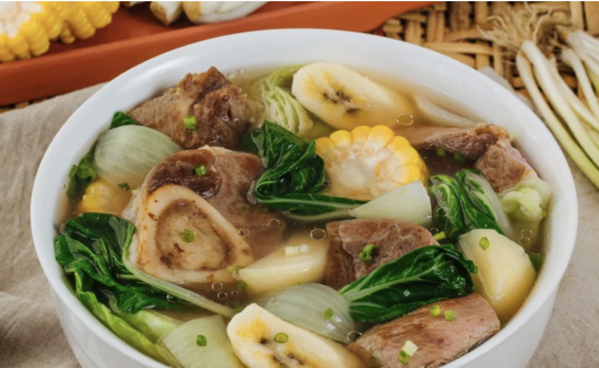

Nilaga

Description
For a dish you can directly translate into English with the phrase “boiled beef,” you probably wouldn’t expect Nilagang Baka to be a delicious balance of flavors. From the soft and satisfying texture of baby bok choy to the ever tender and rich cubes of beef sirloin, this recipe only intermingles the best ingredients for an ever comforting dish. Perhaps one of the reasons why it is so popular is because like many other famous Filipino recipes, it puts together a good deal of meat, vegetables and stew.
Ingredients
- 2 lbs. beef sirloin cubed
- 2 bunches baby bok choy or pechay
- 1 piece cabbage
- 6 pieces Saba banana halved
- 4 pieces baking potato quartered
- 1 piece white onion halved
Steps
- Combine the water and beef broth in a large cooking pot. Bring to a boil.
- Add the onion, star anise, and celery. Reduce the heat in medium. Cover the pot and continue to boil for 20 minutes.
- Remove the onion, star anise, and celery from the boiling liquid using a skimmer or a strainer. You can discard these ingredients.
- Add the beef. Simmer for 60 to 90 minutes or until the beef becomes tender. You can add more water if necessary.